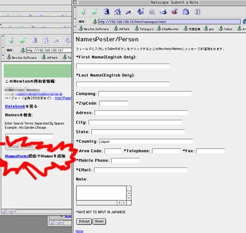

To use these package, you have to install GNUE's "Japanese encoding 1.3" or "Japanese encoding 1.04d1".
Download all Newton Personal Data Sharing UNI Packages
These Newton Personal Data Sharing UNI packages support browse and find and send Notepad in Japanese, browse and find Names in Japanese, browse Datebook in Japanese, and send Japanese note to Newton in 280 letters.
Download all Newton Personal Data Sharing UNI Source Code
このNewton Personal Data Sharing UNIを使用するにはGNUEさんの"Japanese encoding 1.3"か"Japanese encoding 1.04d1"をNewtonにインストールしておく必要があります。その後、先にlightyear_mediaさんのサイトからNewton Personal Data SharingのパッケージをすべてNewtonにインストールしておいてから、ここのUNIコンポーネントを上書きインストールするという手順だとなにかと面倒臭くないと思います。新バージョンが出たときにはそのつどUNIコンポーネントをすべて上書きインストールして下さい。
Newton Personal Data Sharing UNIコンポーネントをダウンロード
Newton Personal Data Sharing UNI コンポーネントのソースコードをダウンロード
Newton Personal Data Sharing はネットワーク上で使われるのを前提に作られています。社内LANなど一般的なEthernetやMacのシリアルで接続するLocalTalk、また試していませんがダイアルアップしてのInternet経由での接続など、IPアドレスを使うネットワーク全般に対応しているようです。
＊社内LANなど一般的なEthernetに接続する場合
Ether CardのドライバとNewton Internet EnablerのEthernetを使うコンポーネントをインストールしたNewtonにEther Cardをさしてネットワークのケーブルを接続した状態でNewton Internet EnablerのInternet Setupで専用のSetupを作ります。
Internet Setupのウインドで「New」をタップして「Generic Setup」を選びます。「Connect using」を"Ethernet"にしてContinueをタップして次に進んで下さい。適当なSetup Nameを付けて「Configuration」を"DHCP Server"にして「Card」を使っているEther Cardを選んだらContinueをタップしてさらに次に進みます。
Domain Nameに関してはネットワークの管理者に問い合わせて下さい。
Doneをタップして終わりです。
＊MacのLocalTalkでシリアル接続する場合
NewtonとMacをシリアルケーブルでつないだ状態でNewton Internet EnablerのInternet Setupで専用のSetupを作ります。
Internet Setupのウインドで「New」をタップして「Generic Setup」を選びます。「Connect using」を"Local Talk"にしてContinueをタップして次に進んで下さい。適当なSetup Nameを付けて「Configuration」を"Manual"にして「Zone」を使っているAppleTalk Zoneを選ん（MacとNewton直結でしたら<Current AppleTalk Zone>でオッケーです）だらContinueをタップしてさらに次に進みます。
Local IP Adressを「192.168.1.2」として「Done」をタップして終わりです。「Subnet Mask」「Gateway/Router Adress」「Primary DNS/Name Server Adress」「Domain Name」はとりあえず未入力でオッケーです。
Mac側の設定：AppleTalkをオンにして、プリンタポートやモデムポートを設定して下さい。次にコントロールパネルのTCP/IPを開いて「経由先」を"AppleTalk"に、「設定方法」を"MacIPを手入力"に、「MacIPサーバゾーン」を"＜現在のAppleTalkゾーン＞"に、「IPアドレス」を"192.168.1.1"に設定して下さい。「ルータアドレス」と「ネームサーバーアドレス」と「検索ドメイン名」は未入力でオッケーです。設定ができたらTCP/IPを閉じて保存して下さい。
設定ができたら早速使ってみましょう。
Newton Personal Data Sharing のコンポーネントをNewtonに全てインストールしてある前提で進めます。「nHTTPd」をタップして出てきたビューの「・P」ボタンをタップして下さい。サーバーのコンポーネントがべろっと出てきます。メインページは「NoteServ」に含まれていますので「NoteServ」をタップすると別のビューが出てきます。「Folder:XXXXXXXX」と表示されているボタンでインデックスページに一覧表示されるNoteのフォルダを選びその上の「index.html」をタップして下さい。すると選んだフォルダ内にIndex.htmlのソースが新規ノートとして作成されます。
「NoteServ」を閉じてもとのビューの「Start」ボタンをタップするとNewton Internet Enablerのスリップが出てくるのでさっき作った専用のSet Upを選んで「Connect」ボタンをタップして下さい。しばらくするともとのビューの「・P」ボタンの上の「Not Assigned」の所に「192.168.1.2」とアドレスが確定されます。
デスクトップ側でブラウザを起動して「http://192.168.1.2/」にアクセスしてみて下さい。NPDSのページがでてくると思います！！！
コンポーネント内の今までの白黒2階調の"pGIFServer:ToadHollow"を16階調グレースケール表示対応の"GIF Server"に置き換えました。
半角の"("")"カッコと"*"アスタリスクと" "スペースと"<"">"呼び方知らないです（笑）がうまく送信できないときがあるバグを修正しました。
Namesに新規Personを登録出来る「NamessPoster」と機能を追加しました。ただ、LastNameとFirstNameに日本語を入力するとNamesが不安定になったり開かなくなったりするのでこの２つのカテゴリには日本語が通らないようにしてあります。NLKがインストールされている環境では未テストなので十分注意して使用して下さい。
”~”（チルダ）が送受信できないバグを直しました。
Worksに直接テキストを送信する「WorksPoster」という機能を追加しました！Worksなら文字数制限なくテキストを送信できるだろうと思って作ったのですが、できてみればあいかわらず全角文字で約1200字までしか送信できませんでした（ガクッ）。NPDSで制限しているようなので（多分内蔵メモリーやカードがいっぱいになると困るので）その制限をもう少し上げてみたいと思います（せめて10000文字くらいは一度に送信したいので）。また、インターフェイスの日本語ローカライズも進めました。
Noteへの日本語の直接送信（ブラウザで入力した文字が直接NewtonのNoteに追加される）の機能が日本語化できました。
こちらも結局文字制限があり一度に全角文字で約1200字までしか送信できず、それ以上入力していると「サーバーはGetコマンドしかサポートしていません」てなエラーが返ってきてしまいます。ちなみに半角英数で、やはり約2400字を越えると「File Not Find」のエラーが出てきますのでNPDS（もしくはNoteかな？）の処理能力の限界なのかも知れません。までもこれでも普通の使い方なら十分だと思われますので、このままアップデート版を公開します。
今回のバージョンではNamesとNoteの日本語検索が通るようになりました。あとWeb*PagerでブラウザからNewtonに簡単に日本語テキストの転送が（文字数の上限がありますが）出来るようになりました。上限は全角文字で280字です。
僕の方で確認しているバグ（？）として日本語一文字での検索をするとうまく引っ掛からないというのがありましたがおそらく僕のNewtonの環境がFreeのソフトで日本語環境を構築しているためで、NLKを使っている人は大丈夫ではないかと思われます。NewtonのFindでも同じ結果がでるので、NPDS自体がデスクトップから受け取ったテキストをFindと同じ処理で結果を手に入れているからではないかと思われます。一応試してみてみた方は簡単で良いのでレポートを頂けると助かります。
前回も触れましたが今回のアップデートでコード変換をEUC-JPに変更しました。Newton内部に作られるindex.htmlもEUC-JPになってますので今までのindex.htmlは捨ててしまって下さい。手順は前回と同様で新しいコンポーネント（今回は5つ全部アップデートされていますので全て）をインストールしたらNPDS SetupのContentから「Edit CSS」をタップして、開いたビューの「Default」ボタンをタップして、閉じてから「Apply」をタップして下さい。これでEUC-JPに対応した新しいindex.htmlが定義されます。でnHTTPdのメインビューで「・P」をタップして「NoteServ」を選んで新しくindex.htmlを作って下さい。で、接続して表示された画面では日本語の検索が通ったりWeb*Pagerで日本語テキストの転送が出来るようになったりしています。ブラウザ側で文字化けしている場合は文字コードを日本語の自動判別かEUC-JPにすればオッケーです。
NPDSUniでNewtonのスクリーンショットをブラウザで見れるバージョンをアップしました。オリジナルのNPDSの「GIF Maker」と「pGIF Server」が必要ですのでNewtonにインストールしてやっといて下さい。ブラウザではグレースケールに対応していないようで白黒での転送ですが遊べるとは思います（笑）。これを応用すればスケッチのあるノートの表示なんかも出来るんじゃないかと思っています。
使い方は新しいNoteSarverUNIとnHTTPdUNIをインストールしたら前回のアップロード時と同じようにインストールした後にNPDS SetupのContentから「Edit CSS」をタップして、開いたビューの「Default」ボタンをタップして、閉じてから「Apply」をタップして下さい。これでScreenShotに対応した新しいindex.htmlが定義されます。でnHTTPdのメインビューで「・P」をタップして「NoteServ」を選んで新しくindex.htmlを作って下さい。で、接続すると「ScreenShotを表示」という新たなリンクが出てくると思います。
ついにCardfile ServerUNIをアップしました（おおげさか？）！しかしトップでも触れたように検索機能は使えませんので06とか0120とかsecretなど英数字で検索をする必要があります（笑）。うーん、まだ全くローカライズしていませんが今は検索に燃えているので検索に日本語を通すまではローカライズはしません！！！（ウソ！）次回ローカライズバージョンを公開予定です！
本当はスクリーンショットをのせたかったのですが余りにもプライベートすぎるので今回は見送らせて頂きました、、、、、
Notepad Server Uniのローカライズが進んだバージョンに加えてDatebookUNIとWeb*PagerUNI（まだ完全には日本語が通りません）、nHTTPdUNI（フォントサイズの変更のみ）をアップしました。ダウンロードは上からお願いします！
ノートのタイトルと本文しか日本語対応していませんがとりあえず公開します。
日本語コード変換にGNUEさんのコード変換モジュールを使っているのでGNUEさんのページにある「日本語コード変換 1.03(161KB) 」または「日本語コード変換 1.04d1(82KB) 」もインストールする必要があります。Notepad Server UniはNewton Personal Data Shering のコンポーネントの1つなのでこれ単体では動作しません。LightyearDesignさんにあるNewtonOS Personal Data Sharingのコンポーネントの"Notepad Server"の代わりにNotepad Server Uniをインストールして下さい。
やっとノートのタイトルに加えノート本文も日本語化できました！対応しているのは普通のノートとチェックリストとアウトラインです。
やっとノートのタイトルが日本語化できました！それぞれのリンクをクリックすると本文に飛ぶのですが本文はなぜかチェックリストフォーマットに限り日本語が通っています（笑）。今はDateBookやNamesは全く手を付けていませんが今後は検索も含め完全に日本語を通したいとおもっています。